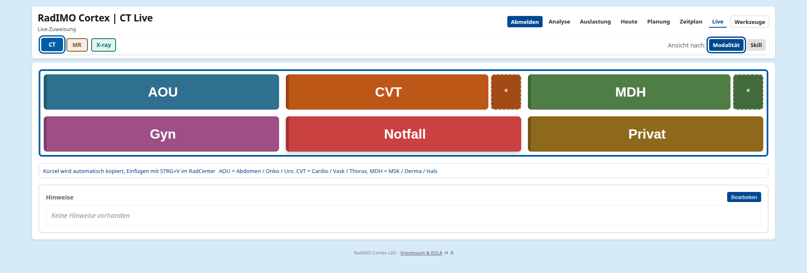
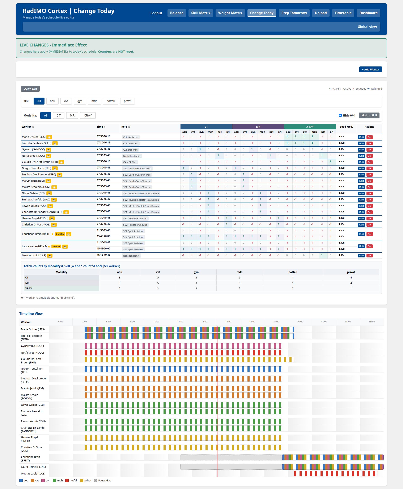
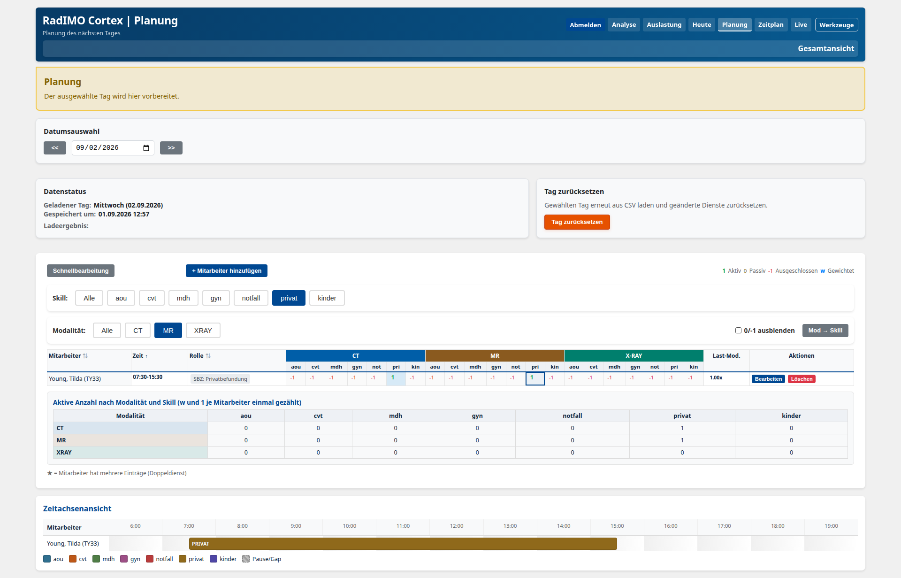
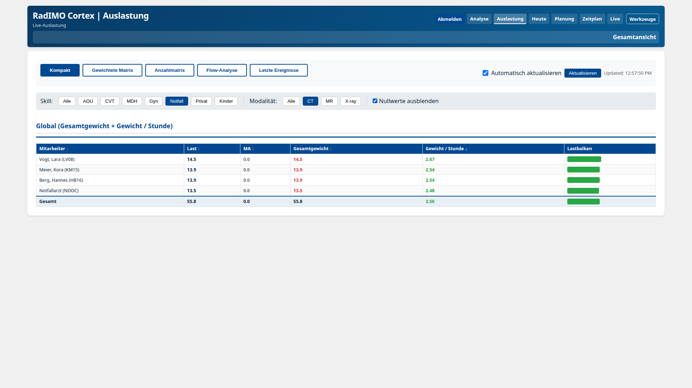
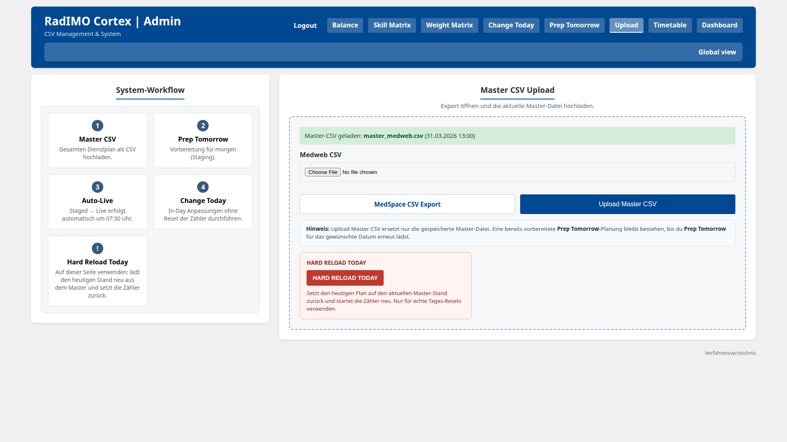

Route by real capacity
Use modality, skill, shift availability, and current load to identify who can take the next work package.
RadIMO · Cortex
Cortex brings schedule, skills, availability, assignments, and current load into one operational view—so coordinators can route the next work package with the whole day in context.

The need
A coordinator should not have to reconcile the schedule, a skills list, and a separate load overview before every decision. Cortex keeps those signals together and turns them into a clear working surface.
Use modality, skill, shift availability, and current load to identify who can take the next work package.
Work-hour-adjusted balancing and configurable weights make the distribution easier to understand and review.
Handle gaps, meetings, sickness, coverage changes, and future plans without losing the shared schedule.
The daily rhythm
Cortex follows the work as it actually happens: start with the schedule, shape the day, then assign and review.
Bring in the current Master CSV and turn it into a working day with the team’s configured roles and modalities.
Adjust live coverage and gaps, then prepare one or more future dates without changing the live day.
Route work from the live view and use timetable and load views to follow the effect across the team.
In use
Cortex keeps the interface close to the reading room: what can be assigned, who is available, what needs to change, and how the load is developing.




Team-controlled
Skills, weights, overflow, specialist-only routing, gaps, corrections, and future-day planning are explicit controls. The team can see what is configured, change what is needed, and review the result.
Read the admin guide →Keep capability and modality coverage aligned with the team.
Make distribution rules deliberate rather than hidden in the workflow.
Support handover, readiness checks, and review of the operating day.
Further reading